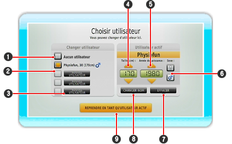

Cet espace vous permet d'enregistrer de nouveaux profils d'utilisateurs, de choisir entre les modes Physio et Fun, ou de comparer vos résultats en ligne.
En lançant les modes Physio ou Fun, il vous sera demandé de façon systématique si vous voulez choisir le profil sélectionné. Si aucun profil n'est sélectionné, créez un profil ou choisissez un profil existant.

| 1 |
Pour ne pas sélectionner d'utilisateur, cliquez ici.
|
| 2 |
Cet espace vous permet de voir les joueurs déjà inscrits, ainsi que leurs données (âge, taille, sexe). Le joueur actif est indiqué par le champ orange.
|
| 3 |
Cliquez ici pour créer un nouvel utilisateur.
|
| 4 |
Indiquez la taille de l'utilisateur (en centimètres). Pour cela, utilisez les touches fléchées ou appuyez en haut et en bas sur  . Maintenez pour accélérer le défilement. . Maintenez pour accélérer le défilement.
|
| 5 |
Indiquez la date de naissance de l'utilisateur à l'aide des touches fléchées. Maintenez le bouton pour accélérer le défilement.
|
| 6 |
Utilisez la télécommande Wii et pointez le sexe de l'utilisateur et appuyez sur  . Le choix du sexe détermine la présence d'un homme ou d'une femme à l'écran lors des exercices. . Le choix du sexe détermine la présence d'un homme ou d'une femme à l'écran lors des exercices.
|
| 7 |
Supprimez le joueur actif en pointant le bouton "Supprimer" à l'aide de la télécommande Wii et appuyez sur .
|
| 8 |
Modifiez l'utilisateur actif en pointant le bouton "Modifier" à l'aide de la télécommande Wii et appuyez sur .
|
| 9 |
Sélectionnez ce bouton pour sélectionner l'utilisateur en surbrillance et revenir à l'écran précédent.
|